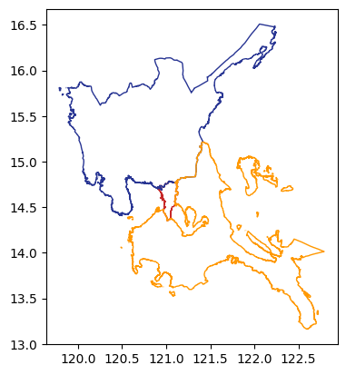

Code
def test_assert_values():
assert 1 == 1
pytest-like tests using ipytest packagefastcore.patch decorator
foo (bar:str='baz')
Function that returns the value of the input argument.
Parameters:
bar (str): Input string. Defaults to ‘baz’.
Returns:
str: The input string.
| Type | Default | Details | |
|---|---|---|---|
| bar | str | baz | input string |
| Returns | str | return same input string or ‘baz’ by default |
foo testsassert in a testdef test_assert_values():
assert 1 == 1foo functions!
bazbar returns the kwarg.def test_foo():
assert foo() == "baz"
assert foo("bar") == "bar"
assert foo(bar="foo") == "foo"Example where bar shows source included in doc
def bar(
foo:str='baz' # input string
) -> str: # return same input string or 'baz' by default
"""
Function that returns the value of the input argument.
Parameters:
foo (str): Input string. Defaults to 'baz'.
Returns:
str: The input string.
"""
return foobar (foo:str='baz')
Function that returns the value of the input argument.
Parameters:
foo (str): Input string. Defaults to ‘baz’.
Returns:
str: The input string.
| Type | Default | Details | |
|---|---|---|---|
| foo | str | baz | input string |
| Returns | str | return same input string or ‘baz’ by default |
bar testsbar functions!
bazfoo returns the kwarg.def test_bar():
assert bar() == "baz"
assert bar("bar") == "bar"
assert bar(foo="foo") == "foo"Dummy (*args:[], **kwargs:dict)
Dummy class example
Dummy class example for documentation purposes. Goal is to showcase how to split class methods into their own sections
Parameters:
args(list): list of args
kwargs(dict): dict of kwargs
Dummy.dummyfoo (bar:str='baz')
Method that returns the value of the input argument.
Parameters: bar (str): Input string. Defaults to ‘baz’.
Returns: str: The input string.
| Type | Default | Details | |
|---|---|---|---|
| bar | str | baz | input string |
| Returns | str | return the input string |
Dummy.dummyfoo tests@pytest.fixture
def dummy():
yield Dummy()def test_dummyfoo(dummy):
assert dummy.dummyfoo() == "baz"
assert dummy.dummyfoo("bar") == "bar"
assert dummy.dummyfoo(bar="foo") == "foo"A sample exposition of code including explanatory graphs
# always separate imports from rest of code
import geopandas as gpd
from pathlib import Path
import matplotlib.pyplot as pltregionfile = Path('../data/region34ncr_admin.geojson');
regionfile.exists()Trueif regionfile.exists():
aoi = gpd.read_file(regionfile)
aoi.plot(
ax=plt.axes(),
facecolor="none",
edgecolor=[
"#C62828",
"#283593",
"#FF9800",
],);